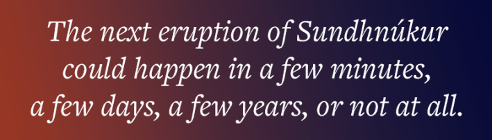
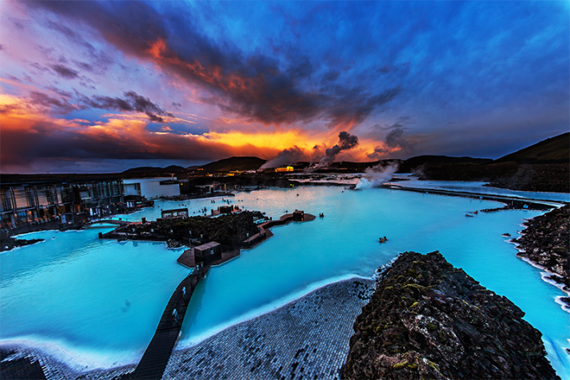
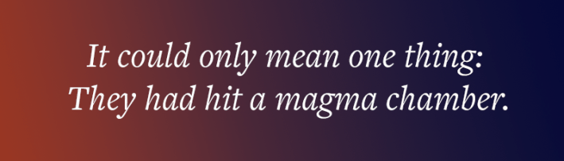

In August 2024, I was driving with my children in Southwest Iceland toward the Blue Lagoon, a cluster of hot geothermal pools in the Reykjanes Peninsula, when the highway suddenly ended. Before us, a frozen river of dark lava engulfed the road and much of the land to the horizon. As my children and I exited the car to get a closer look, I imagined a fluorescent taffy of hot lava just under its crust. The obsidian lava whorls and undulations both mesmerized and inspired in me the fleeting thought of “let’s get the hell out of here.” When we made it to the Blue Lagoon by taking a gravel detour, we learned that the flow we’d observed was only a few weeks old. “But don’t worry,” an employee assured us. “Our alarms will sound when another eruption occurs.”
Another eruption? While trying to relax in the warm waters, I pondered whether we would need to scramble from the pool up the 26-foot-tall rocky berms surrounding us to safety. Turns out, a nearby row of volcanic craters called the Sundhnúkur had already erupted five times in recent months. It would again just a few days after we flew home, with a couple reporting that they were sitting in the lagoon when they were suddenly told to grab towels and run, and yet again a few months after that, which would be the largest eruption to date, resulting in lava oozing—like the ceaseless blob of the eponymous 1958 horror flick—along the makeshift barriers of the Blue Lagoon and inundating the parking lot and a service building with flaming hot lava. No one was harmed, and visitors and employees at the Blue Lagoon were safely evacuated, but they had only 48 minutes advance notice before the eruption began.

That’s about the best that Iceland can do for now. Lovísa Mjöll Guðmundsdóttir, a volcanologist at the Icelandic Meteorological office, told me that they can’t make a solid prediction a few days out. Instead, the most certainty they have before an eruption is typically “20 minutes up to a few hours.”
This isn’t exactly a comfort to lagoon bathers or the roughly 70 percent of Iceland’s population who live within the vicinity of the Reykjanes Peninsula, including the capital region of Reykjavik. Guðmundsdóttir says the next eruption of Sundhnúkur could happen in a few minutes, a few days, a few years, or not at all.
Read more: “The Volcano That Shrouded the Earth and Gave Birth to a Monster”
Iceland has 35 active volcanoes, placing it in the top 10 countries in the world with the most volcanoes erupting since 1960. Iceland may soon launch itself further up the list as more volcanoes in the Reykjanes Peninsula wake from a centuries-long slumber expected to last for about 200 years. This means the island’s inhabitants are facing an even more precarious future than the present.
Although there have been no deaths caused by recent volcanic activity except for one due to a sinkhole, the biggest threat to the region so far has been to the ongoing destruction of Grindavik, a village whose residents have either moved away or faced repeated evacuations while lava and ash bury their homes, and to Iceland’s infrastructure, such as water pipes which were damaged in a 2024 eruption and left 30,000 residents and travelers at the Keflavik International Airport without hot water in subzero temperatures. The volcanic eruptions also threaten the 249,000 residents of the capital region of Reykjavik with the emissions of volcanic ash particulates, which can reach them within a few hours after an eruption and have been associated with emergency hospital visits for cardiorespiratory problems.

TOO CLOSE FOR COMFORT? Iceland’s famed Blue Lagoon geothermal spa is located near the volcanically active Sundhnúkur crater chain. Credit: Bhushan / Adobe Stock.
Yet there is promise that Icelanders may not have to grit their teeth through the next couple centuries until the Reykjanes Peninsula goes dormant. Unlike most other volcanic regions in the world, Iceland has one of the shortest known distances between the Earth’s surface and the magma below—a feature that a team of researchers is exploiting in the hopes of opening up a whole new way of predicting volcanic eruptions that could give days—rather than just hours or minutes—advance notice before an eruption occurs.
In Iceland, this can only be welcome news. Valentin Troll, a petrologist at Uppsala University in Sweden, says that as of March 2026, the volume of magma under the Sundhnúkur is now at the same level it was before the previous eruption in July 2025. “Iceland is probably going to erupt again very soon.”
In Jules Verne'sJourney to the Center of the Earth, Professor Von Hardwigg and his nephew enter the bowels of the Earth through a volcano on Iceland’s Snæfellsnes Peninsula before popping back to the surface through a volcano in Italy. They do this by foot. You might say that this is a fantasy of volcanologists today. Not to travel into the deep Earth themselves— the constraints of pressure and heat would make this rather unpleasant and, frankly, impossible—but to have instruments that could withstand these conditions and allow them to test what’s happening underground before the lava emerges to the surface.
Currently, all the methods used to study volcanoes are indirect. Seismographs record Earth tremors, fiber optic cables detect changes in temperature and geological movement, and satellites together with ground tilt meters sense ground deformation—a tell-tale sign that magma may be near the surface like a pot about to boil over. Heat-resistant instruments test surface lava for temperature, viscosity, minerals, and gas emissions to reconstruct pressure and chemical changes underground. Plate tectonics and the history of volcanic activity are also considered. Computer models are built to draw inferences based on available evidence that could simulate the magma’s potential to erupt.

All of this is an effort to get a better picture of what might be happening under the crust where the molten rock sits—the missing piece in volcanic prediction. Yet scientists find it difficult to not only guess the composition of magma, but to even determine where it is. “We cannot really see under the surface,” says Troll. “That’s the problem.” If volcanologists could know precisely where a magma chamber rests, including the magma’s composition and the changes it went through days or weeks before it exploded to the surface, then the theory goes that they could vastly improve their predictions.
In 2009, the Iceland Deep Drilling Project, a consortium of geothermal companies, set out to drill down around 3 miles in the Krafla Caldera, a volcano in North Iceland, looking for high enthalpy fluids, that is, superheated gases, which could potentially be harnessed to produce electricity and heat homes. Instead, their drill jammed just over 1 mile in. They moved the drill to the left and then to the right to see if they could bypass whatever hard material was making it difficult for them to go any deeper, when suddenly the drill started bringing up glass chips. This is what happens when magma is pulled rapidly to the surface, and it could only mean one thing: They had hit a magma chamber.
Hitting a magma chamber has only happened in two other locations in the world: the Menengai Crater in Kenya and the volcanic region of Puna on Big Island in Hawaii. However, the Krafla Caldera is by far the best documented and most accessible. Not to mention, exploration of this volcano has the backing of the Icelandic government, and drilling poses few risks because there are few people living nearby. This was an “aha moment,” says Björn Þór Guðmundsson, CEO of the Krafla Magma Testbed, a company that emerged in the wake of the discovery of magma below Krafla.
Read more: “What Volcanoes Tell Us”
KMT’s aim is to use the Krafla well not only as a potential source for clean energy, but also as a site for scientists to conduct research. The company plans on building a permanent magma “observatory,” which they define as a well drilled deep in the Earth’s crust through which they can send down instruments able to withstand temperatures ranging from around 1,300 degrees Fahrenheit to 2,400 degrees Fahrenheit to access the magma and the surrounding rock. This will enable an international team of scientists to measure the temperature, pressure, chemical compositions, and stress changes in the liquid magma prior to an eruption— “the holy grail for volcanologists,” says Guðmundsson.
Scientists observing the Krafla testbed won’t necessarily wait for an eruption to happen, either. They plan to inject radioactive chemical tracers into the magma, and then induce minor scale eruptions. The next step is to follow the tracers to learn where the magma flows and what compositional changes it undergoes before it emerges in the light of day. Paolo Papale, a scientist at KMT and Research Director of the National Institute of Geophysics and Volcanology in Pisa, explains that this will help scientists establish a relationship between changes underground and those on the surface, and how these two things correlate to eruptions. This “natural laboratory,” says Papale, will take the field of volcanology from “theory and speculation to a real testing of ideas and hypotheses.”
Eventually, KMT hopes to replicate their observatory at other volcanic sites to study the behavior of different types of magma and how this corresponds to eruptions. For example, Sundhnúkur’s magma is more basaltic than Krafla’s and so less explosive but runnier, which explains the huge lava flows my children and I had witnessed. Papale says they hope to one day establish observatories at some of the most high-risk volcanoes in the world, such as Campe Flegrei and Vesuvius in Naples. Better predictability in these locations has the potential to save hundreds of thousands of lives. “Imagine if the citizens of Pompeii would have had just one or two days rather than a couple hours to evacuate Naples before Vesuvius erupted,” says Guðmundsson.
Now, KMT is testing alloys that can withstand the pressure and temperatures in magma chambers for a sustained period. Their aim is to open the observatory in 2027 for experimentation. In the meantime, some Icelanders aren’t holding their breath. There are discussions of building another international airport in a safer zone. As for The Blue Lagoon, it’s expanding into areas away from an active volcano. 
Lead image: Jag_cz / Adobe Stock
References
- Original Article: https://nautil.us/iceland-is-going-to-erupt-again-very-soon-1280632/